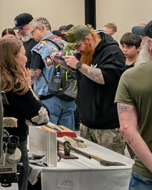
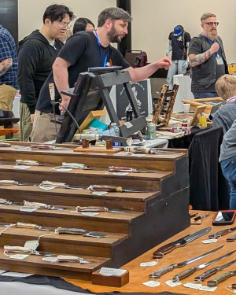
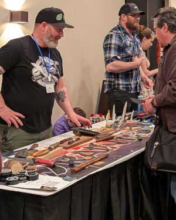
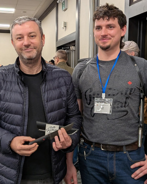

Knives. Makers. Collectors. Community.
The Toronto Knife Show brings together knife makers, bladesmiths, collectors, enthusiasts, suppliers and craftspeople for a full day dedicated to knives and the people who make them.
Discover handcrafted knives, meet the makers behind them, browse tools and materials, and connect with a community that shares an appreciation for the craft.
The Toronto Knife Show is a place to discover new work, meet the people who make it and spend a day immersed in the knife community.
Whether you're a collector looking for your next piece, a maker looking for inspiration and connections, or simply someone who appreciates well-made tools, there's something to discover on the show floor.

On the Show Floor
Meet custom makers and bladesmiths and see handcrafted knives, forged blades and one-of-a-kind pieces up close.
Browse knives and blades from makers and exhibitors, from one-of-a-kind custom work to small-batch and semi-production pieces, along with related gear and accessories.
Find materials, tools and supplies for making, maintaining and working with knives.
Talk knives with makers, collectors and enthusiasts, compare what you've brought with what others have brought, and spend a day surrounded by people who share your interest.
Who's There
Hundreds of enthusiasts attend the Toronto Knife Show to discover new work and meet the people behind it.
Our exhibitors include custom makers, bladesmiths, dealers, suppliers and craftspeople from across the knife community.



Over 600 attendees joined us at our most recent show.
But you don't have to take our word for what the Toronto Knife Show is like.
Knife enthusiast and collector Robert Laufer has attended and reviewed the Toronto Knife Show since its inaugural year, documenting the makers, knives, people and experiences he encountered along the way.
Read his detailed reviews and browse his extensive photography from previous shows.
TKS 2025 Review TKS 2026 ReviewThe Luxe Convention Centre is attached to the Hyatt Place Toronto/Mississauga hotel, making it easy to stay right at the show venue.
A special Toronto Knife Show group rate will be available for attendees and vendors, stay tuned for details.
Good to Know
No. Tickets are sold at the door on the day of the show and paid for in cash.
Yes. Children are welcome at the show, but must be accompanied by an adult. Children under 12 attend free with an accompanying adult.
Service animals are always welcome, as required by law. Well-behaved pets are also welcome at the show.
Absolutely. The Toronto Knife Show is a place for people who like knives to bring them, talk about them, show them off and meet others who share the same interest.
You can also bring knives to complete arrangements with vendors, including selling or trading a knife you own, delivering an item arranged in advance, or dropping something off for sharpening or other services. You're welcome to make new arrangements directly with vendors at the show as well.
As a courtesy, please don't solicit sales at someone else's table.
Payment methods vary by vendor. Most vendors accept cash, and some may offer other payment methods.
An ATM is available in the hotel lobby.
Yes. The venue offers accessible parking, and the washrooms on the lower level are accessible by public elevator.
If you have specific accessibility needs, contact us beforehand and we'll be happy to help however we can.
Get announcements and updates about the Toronto Knife Show.
The Toronto Knife Show welcomes makers, bladesmiths, dealers, suppliers and other craftspeople whose work complements the knife community.
Vendor applications open in the fall, with applications accepted in waves beginning in November.
Their premium products empower the artisans behind many of the exceptional knives featured at the show.
Luxe Convention Centre · 5787 Hurontario St, Mississauga, ON L5R 4B4